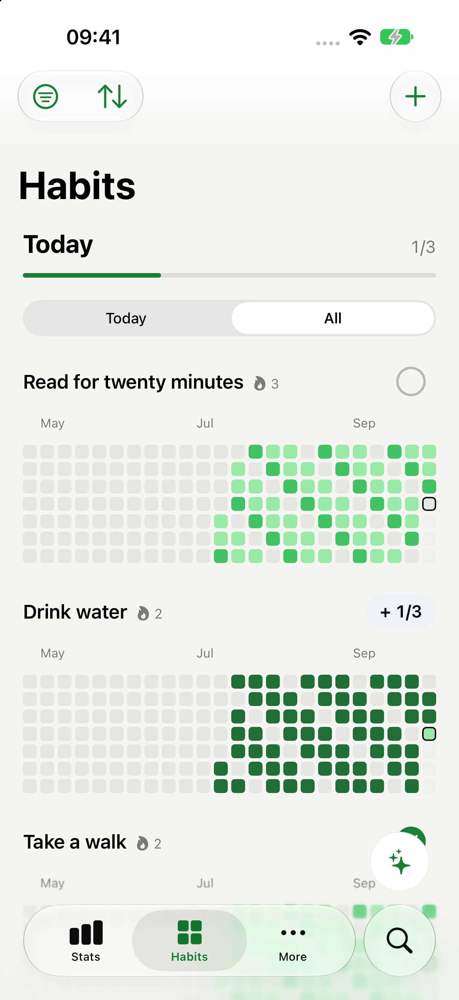
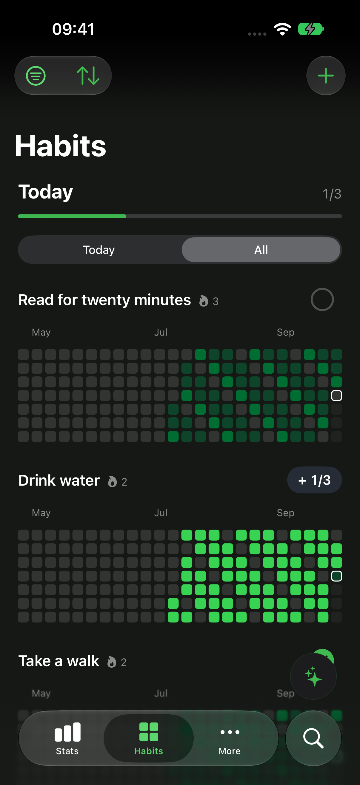
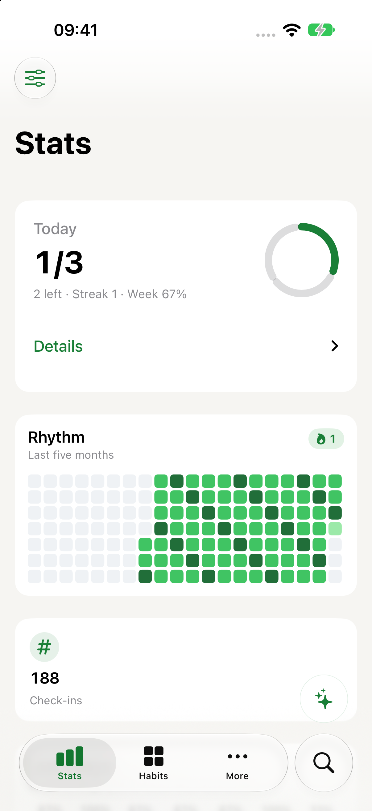
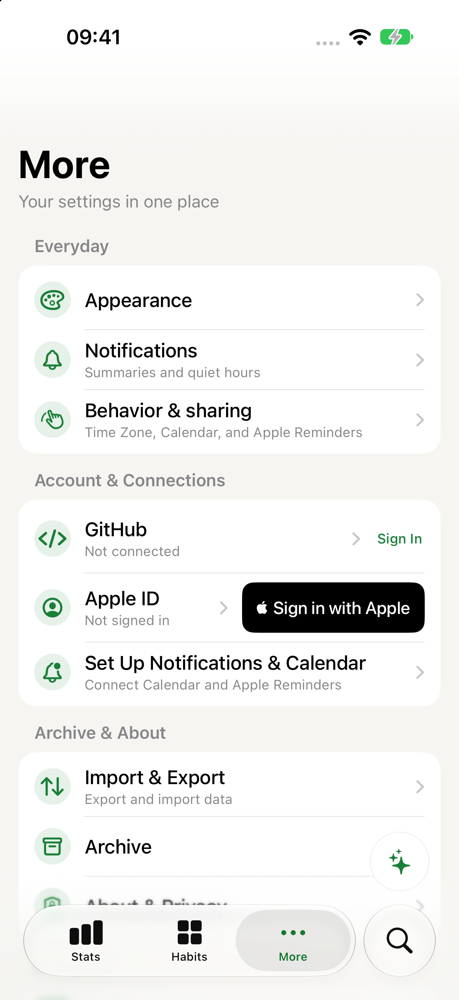

A year you can read.
Every habit has its own contribution graph. Track a simple check-in, a quantity, a checklist, or a habit you want to avoid.
Habits, one square at a time.
Read a little. Take a walk. Make time for what matters. hAiity turns your everyday follow-through into a contribution graph you can watch grow.
Native iPhone app · iOS 18+ · In development
No account. No tracking. Your habits belong to you.


Check in. Paint a square. A little action today becomes a pattern over time.
See what you can track ↓Built around your real life
Every habit has its own contribution graph. Track a simple check-in, a quantity, a checklist, or a habit you want to avoid.
Choose weekdays, intervals, or a day within a month. Days that aren’t due don’t break your streak. Missed a check-in? Fill in the past.
Keep habits and reminders together. Set the notifications you want, and check in from a widget, Siri, or Control Center.
Native controls, light and dark appearances, color palettes and app icons. Made to work with Dynamic Type, VoiceOver and Reduce Motion.
Inside the app
See what’s due today, look back at your progress, and make the experience your own. These are real screens from the current development build.


Your routine is personal
hAiity stores your habits locally. If you’re signed into iCloud, it mirrors them into your own private CloudKit database. Offline tracking still works.
No hAiity account, analytics, advertising or developer-operated sync server. JSON export and import give you another way to keep your data; imports merge rather than replace it.
Optional integrations, including Apple Reminders and a read-only GitHub contribution view, are yours to enable.
Start small. Keep going.
Up to three active habits, every habit kind, contribution graphs, streaks, widgets, reminders, Siri, built-in palettes, app icons and JSON export.
Archived habits don’t count toward the limit.
Unlimited habits, custom colors, the calendar mirror and full statistics. Designed as a one-time purchase, with no subscription.
Purchase availability and regional pricing appear in the app.
The project is in development and is tested through TestFlight. This page does not currently offer a public App Store or TestFlight invitation link. Contact us below to ask about beta availability.
Check-off habits, quantities, checklists and avoidance habits. Reminders can live alongside them, and schedules can follow the cadence that makes sense for you.
No hAiity account is required. iCloud uses the Apple ID already on your device. The optional GitHub connection is separate and is not needed for habit tracking.
You can backfill a past day from the graph. Your schedule determines which days are due, so a planned day off doesn’t break the streak.
Follow along
hAiity is still growing. Curious about the beta, or have an idea?